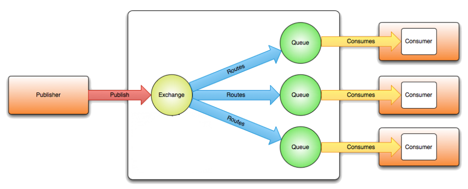

Le guide du snowcampeur
ou comment rater efficacement 3 stand-up !
Snowcamp.io 2.0
Organisation
- 8 * 3h = 24h d'universités (nous: 4 * 3h)
- 2 * 1h Keynote
- 40 * 50min ~ 33h de conférences
→ 25h à vous raconter !!
Agilité/oragnisation
- Event storming
- Open Source Challenges
- Open Stack
Event storming

Event storming

Open Stack
Comment intégrer 90k commits / an ?
Open Source Challenge
- Open Source ?
- Réussites de l'Open Source
- Défit de l'Open Source
DevOps
Collaborer pour un déploiement rapide
- Jenkins 2.0
- Spinnaker
Jenkins 2.0 - revolution !
New interface
Pipeline as code
- syntaxe déclarative ~ yaml
- jobs dans de workspaces séparés
Spinnaker
Continous ... integration, delivery, deployment
- par Netflix
- plateforme de deployment open source multi-cloud
Architectures
- Modularité avec Java 9
- Big Data avec Apache Spark
- Microservices avec WildFly Swarm
- Serverless avec les Amazon Lambda
Java 9
Introduit des modules pour
- splitter le JDK trop grand
- donner plus de contrôle
- rendre les dépendances claires
comme aller au dentiste : c'est chiant, mais il faut !
... et aussi du reactive programming
Apache Spark
Un système de calcul distribué général haute performance batch & temps-réel
Tools
- Spark SQL
- MLlib
- GraphX
Wildfly Swarm
&
Amazon Lambda
Microservices et fonctions lambda
Reactif
Redux/React

Reactif
| Spring Framework 5 | Vert.x | |
| API | Reactive Stream | Future/RxJava |
| Microservices | 1 projet = 1 programme | Forme simplifiée d'acteurs |
| Structure | framework | ensemble de bibliothèques |
| Adoption | Massive | En croissance |
| JavaEE | Intégration des standards | Support de leurs propres API |
| Langage | Centré JVM (Java et Kotlin) | Java, Javascript, Ruby,… |
RxJava

RabbitMQ
Docker Swarm

Docker Swarm

Front-end/web
- Streaming d'API
- GraphQL vs. Falcor
- L'asynchrone "synchrone"
Steaming d'API
Give me the data now
- Polling madness
- Webhooks & callback
- Pub-Sub
- Push technologies
- Web-sockets
- Server-sent events
GraphQL vs. Falcor
REST++ : requetes spécifiques
GraphQL
- spec Facebook
- nouveau langage
Falcor
- spec Netflix
- JSON
L'asynchrone "synchrone"
par un Viseo !
Live coding : des promesses...